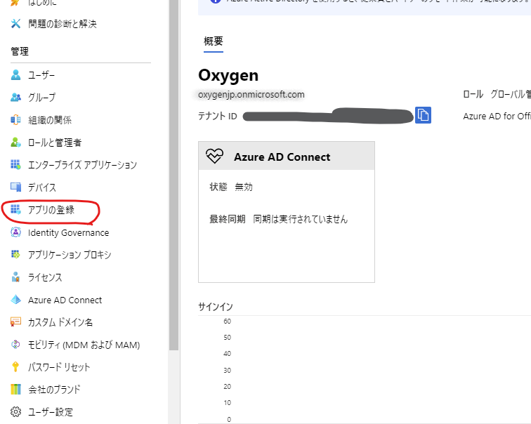
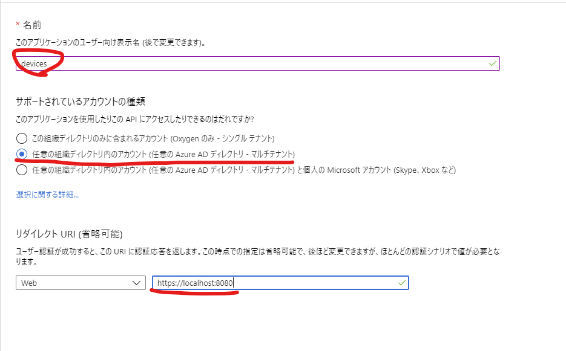
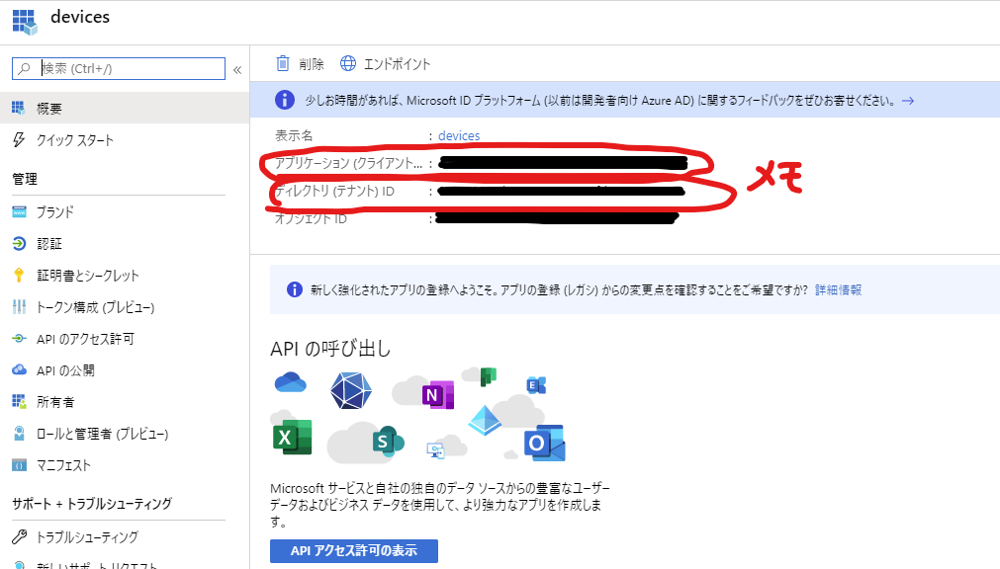
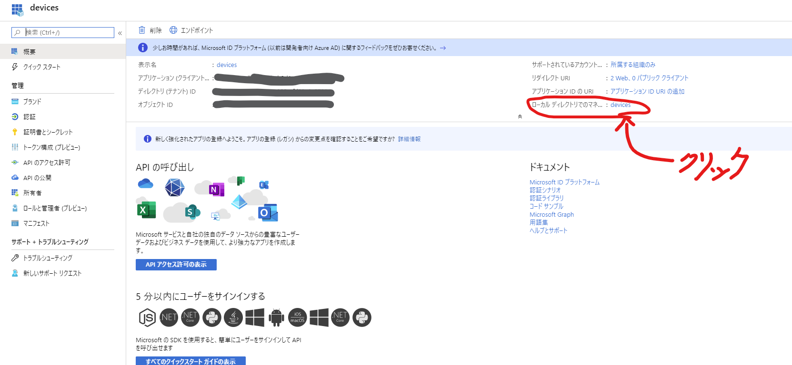
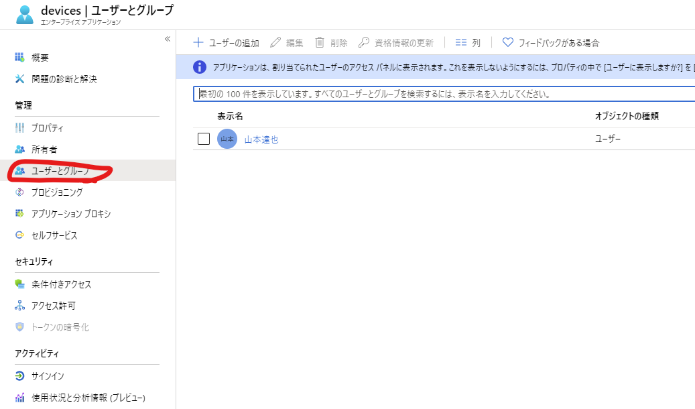
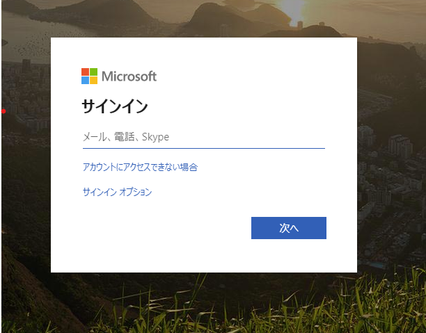

自作 SPA アプリケーションを Azure AD の OpenIDConnect 認証を使って保護する
動機
クラウド上に、一般公開したくない便利ツールや組織内ツールを配置するときなどは、不特定多数の人間に見られないように、何らかの制限を加えることになる。
業務拠点が1か所に限定される場合は、IPアドレス制限で事足りてしまうこともあるが、リモートワークやら、他企業との連携など、多様な業務に対応するのは難しく、あるタイミングから、認証の基盤が必要になってくる。
簡易的でいいのであれば、basic 認証でもいいのだが、パスワードが乱立すると管理が煩雑になる。クラウド上にアップロードしたコンテンツを、組織内 AD のアカウントで閲覧制限できるようになると、運用も楽になって安心である。
GCP (Google アカウント）でやる場合
GCP でやる場合は割と簡単で、 App Engine 上にコンテンツを作成し、 Identity Aware Proxy で保護してやれば、管理者がホワイトリストで一覧化した Google アカウント のみに閲覧を許可することができる。
しかし、アカウント管理が AzureAD ベースになっている組織で、非公式に Google アカウントを発行すると、退職/退プロ者 のアカウント削除漏れが発生する可能性が出てきて、インシデントにつながりやすい。(人事部の運用も大変になる)
Azure AD のアカウントを GSuite に統合する方法もあるが、 GSuite の管理者権限が必要だったり、組織全体を巻き込んだ大がかりな意思決定が必要になるっぽい。
そのため、あくまでAzure のリソースや、AD の設定をいじるだけで、MSアカウントで 認証を実現する方法を考えてみたい。
ゴール
Blob 上にホストした SPA(Vue.js で実装) を、ホワイトリストに登録した AD ユーザー のみが閲覧できるようになれば OK。
この時、ホワイトリストに登録するのは、テナント外の人間も含む。（パートナー企業とか、子会社、親会社への閲覧も想定）
もともと閲覧できていたユーザーを即時閲覧不可にするのは、(認可のプロセスを間借りしている関係上)いったん考えないものとする。
準備
やることは、大きく分けて、下記の2つ
-
Azure AD のアプリケーションを作成し、ユーザーを割り当てる
-
Client アプリを msal で保護する
Azure AD の アプリケーションの作成
Azure Portal から、 Azure Active Directory -> アプリの登録 と進む。

新規登録 から、アプリを作成します。

この時、
-
アプリの名前は任意
-
サポートされているユーザーの種類は、「任意の組織ディレクトリ内アカウント」にする。こうしておくことで、このテナントに所属していないユーザー（ゲストユーザー等）もサインインの対象にできる。
-
リダイレクト URI は、アプリをホストするドメイン（ローカルでホストするときは、
http://localhost:8080, Blob 上にホストするときは、https://<storage account name>.blob.windows.net/<container name>/index.html#/等。 リダイレクト URL は後から複数に変更できるので、ひとまず localhost で。

アプリが作成できたら、作成したアプリを選択し、アプリケーション ID とテナントID をメモしておく。後でクライアント側を実装するときに使うことになる。
アプリに ユーザーを割り当てる
この状態だと、任意の Azure AD にログインできるユーザーは、誰でもアプリの認証が通る状態になっている。 着実に進めて行きたい人は、ここで、ものは試しにとログインしてみたくなるが、後で切り分けが難しくなるので、じっとこらえた方がいい。
アプリを選択した状態の画面で、下図の場所にあるリンクをクリックすると、エンタープライズアプリケーションの設定画面に遷移するので、そこでユーザーの割り当てを行う。

画面左の「ユーザーとグループ」からユーザー、もしくはグループを割り当てる。

これでクラウド側の準備は完了。
Client アプリ（Vue）で msal を設定する
Node 周りで AD 認証のライブラリを調べていくと、 msal と adal という二種類のライブラリが出てくる。
で、こちら の記事によると、どうやら msal の方が後継のようなので、特別理由がなければ msal を使った方がよさそうである。
vue で msal を使うためのライブラリを調べていくと、 vue-msal というライブラリを使えば簡単に認証が実現できるようなので、使ってみる。
インストール
npm で簡単にインストール
npm install vue-msal
設定
main.js で、下記の通り設定してやる。 公式ドキュメントをよく読まないとわかりづらいが、最低限、 clientId, tenantId, redirectUri の3つは明示的に指定してやる必要がある。 (clientID, tenantId は、アプリケーションの作成時にメモした値)
import msal from 'vue-msal'
Vue.use(msal, {
auth: {
clientId: '<アプリのクライアントID>',
tenantId: '<アプリのテナントID>',
redirectUri: `${process.env.VUE_APP_API_URL}` // .env.local ファイルで環境変数に設定しておくと、本番用のURL と使い分けやすい
}
})
実装
この方式で、ちゃんとリソースが保護できているかはちゃんと考えないといけないが、 ひとまず、App.vue にこんな感じに設定しておけば、認証を強制することができる。
<template>
<div id="app" v-if="$msal.isAuthenticated()">
<!-- router-view とか -->
</div>
</template>
<script>
export default {
beforeCreate() {
if (!this.$msal.isAuthenticated()){
this.$msal.signIn();
}
}
}
</script>
動作確認
ひとまず、こんな感じで、 ローカルでアプリを立ち上げて、 localhost:8080 にアクセスしたときに、Azure AD のログイン画面に飛ばされる。

この時、アプリケーションに割り当てたユーザーアカウントでログインすれば、画面が表示されるはず。
デプロイ
Blob でホストするときは、下記のことに気を付けること。
-
vue.config.jsで publicPath を、デプロイするコンテナ名と一致させること。 -
router の mode を history ではなく、 hash にすること。
-
上記に伴い、.env.production で、 RedirectUri の変数を、hash mode 用の URL にすること。
感想
Azure AD のユーザーは、各社使っているところが多いので、他社とコラボレーションするときは非常に便利そう。
一方で、マネージドサービスのみで完結しない（vue-msal の実装や設定が必要）ので、心理的ハードルは高め。本当にこれで保護しきれているのか、不安がぬぐい切れない。
特に、vue の実装周りのところは大いに不安が残るので、プロダクションで同様のことをするのはお勧めしない。
Blob 上の簡易的なホスティング は、SSL が必須な環境がほしいときに割とよく使うので、この辺りを完全マネージドで保護する機構とかあるとうれしいのだが。。。
感想その2
上記、調査、環境準備、実験条件の整理等々で、かなりの時間と覚悟を要したが、ブログを書き終わった後になって、Azure Learn なる MS公式のコースでわかりやすく紹介されていることが判明。1時間でできるらしい。
https://docs.microsoft.com/ja-jp/learn/modules/secure-app-with-oidc-and-azure-ad/
こんなわかりやすいコースがあるなら、Google検索で引っかかりやすくしておいてほしかった。。。
とはいえ、失敗した部分も含めて勉強になったのでよしとする。